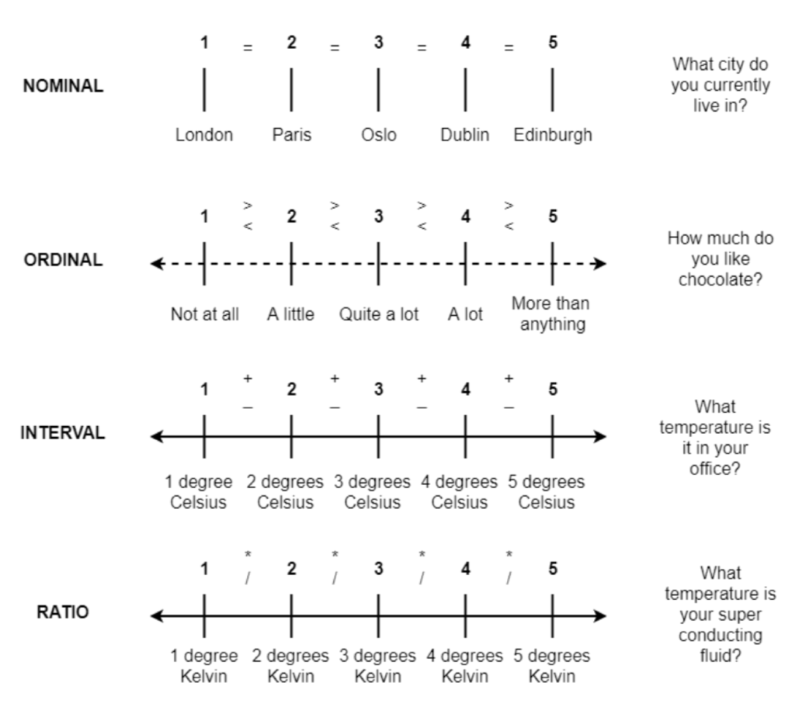

Week 1 – Research Design & Data
MSDA – IFP Programme
Course Overview
- Research design and data
- Describing categorical data
- Describing continuous data
- Describing relationships
- Functions
- Hypothesis testing and inference
Week’s Learning Objectives
- Understand the link between study design and data.
- Define and distinguish between levels of measurement.
- Identify and describe data types with psychological and applied examples.
Topics for Today
- Broad aim of measurement
- Measurement, design, and data
- Data in R
Concepts in Measurement
Measurement links research design to the kind of data collected.
Understanding how variables are measured determines the type of analysis you can use.

Data Types and Levels
Categorical - Nominal
- Ordinal
- Binary (special case)
Numeric - Interval or Ratio
- Continuous
- Discrete (Count)
Categorical Data
Variables with a discrete number of response options.
Often coded as integers.
Binary data is a special case with only two possible values.
| ID | Hair_colour | Likert_item | Degree |
|---|---|---|---|
| ID101 | Brown | Strongly Agree | No |
| ID102 | Brown | Agree | No |
| ID103 | Blonde | Agree | Yes |
| ID104 | Blonde | Disagree | Yes |
| ID105 | Black | Strongly Disagree | Yes |
Numeric Data
Variables that can take any real-number value within a given range.
| ID | ReactionTime | Height_cm | Weight_kg |
|---|---|---|---|
| ID101 | 1.2 | 191.2 | 88.9 |
| ID102 | 0.9 | 180.8 | 76.6 |
| ID103 | 3.2 | 165.3 | 52.0 |
| ID104 | 5.5 | 177.1 | 81.5 |
| ID105 | 2.1 | 201.0 | 105.8 |
Count Data
Variables that can only take non-negative integer values (0, 1, 2, 3 …).
Examples: number of correct responses, number of siblings.
Levels of Measurement (Stevens, 1946)
- Nominal – categories without order
- Ordinal – ordered categories
- Interval – ordered, equal spacing, no true zero
- Ratio – ordered, equal spacing, true zero
With each level, numeric values gain meaning and allow more analytical options.
Nominal Data
Categorical variable where numeric labels have no meaningful order.
| ID | Hair_colour | Hair_values |
|---|---|---|
| ID101 | Brown | 1 |
| ID102 | Brown | 1 |
| ID103 | Blonde | 2 |
| ID104 | Blonde | 2 |
| ID105 | Black | 3 |
Ordinal Data
Categorical variable with meaningful rank order, but not equal spacing.
| ID | Likert_item | Likert_values |
|---|---|---|
| ID101 | Strongly Agree | 5 |
| ID102 | Agree | 4 |
| ID103 | Agree | 4 |
| ID104 | Disagree | 2 |
| ID105 | Strongly Disagree | 1 |
Interval Data
- Numerical values have meaning
- No true zero point
- Differences between values are meaningful
Example: IQ or other standardised scores.
Ratio Data
- Numerical values have meaning
- True zero point
- Possible to multiply and divide
Examples: reaction time, height, weight.
Levels of Measurement
Data Types and R
| R Data Type | Example | Level of Measurement | Data Type |
|---|---|---|---|
| Character | ID | Nominal | Categorical |
| Numeric | Reaction Time | Interval or Ratio | Continuous |
| Factor | Hair Colour | Nominal | Categorical |
| Ordered Factor | Likert Scale | Ordinal | Categorical |
Data and data sets
Data sets

Tidy Data
- Each variable has its own column.
- Each observation has its own row.
- Each value has its own cell.
Each value belongs simultaneously to a variable and an observation.
Working with Data in R
Typical workflow:
- Import datasets into R (
read.csv()orread_tsv())
- Check variable types (
str()orglimpse())
- Select columns and filter rows (
dplyr)
- Recode or create variables
- Merge data sets
- Summarise and visualise
Summary of Today
- Connection between research design and data
- Key types and levels of data
- Representation of data types in R
- Introduction to tidy data principles
This Week
- Attend both lectures
- Attend your lab and complete lab tasks collaboratively
- Office hours for 1-to-1 questions